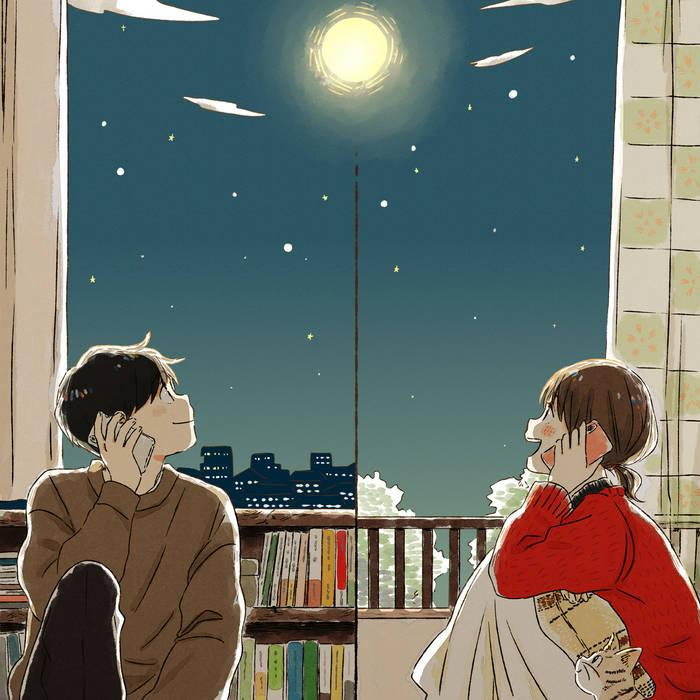
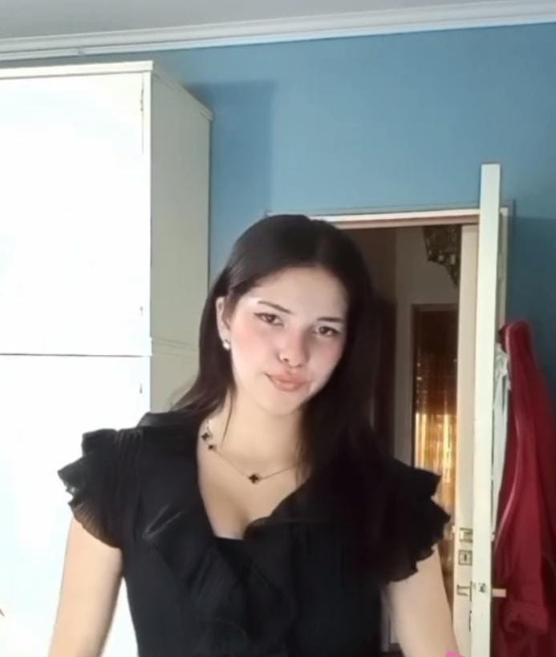

Aquí voy a poner todos los poemas que le he dedicado a mi querida Andy. También habrá poemas que aún no le he dedicado. Solo diré que todos estos poemas los hice pensando únicamente en ti: en cómo te ves, cómo eres, cómo eres conmigo, cómo me haces sentir cuando estoy contigo, en lo que siento al verte y en muchas cosas más.
Espero que recuerdes todos esos poemas y que te gusten los que aún no has visto. Te amo.
Uno de los primeros poemas que te he dedicado fue "Desnuda". En ese momento quería conocerte más allá de lo que me mostrabas y verte desnuda metafóricamente.
desnuda.
quiero conocerte y verte
desnuda, no es como lo piensas,
sino
dime tus sueños
que te apasiona?
que te hace reír?
que te hace llorar?
cuéntame de tu vida
de tu infancia
cual es tu color favorito?
cual es la música que te gusta?
la comida que hace agua tu boca?
que te gusta?
que no te gusta?
como te sientes?
mejor dicho cuéntame todo de ti
sin filtros y sin nada, todo sincero
así al fin podre decir que te vi
desnuda
-Polo Musse Sergio
El siguiente poema se llama "Tú y tu forma de ser". Este poema lo escribí sabiendo que, de todas las personas que pude haber conocido, te conocí a ti. Y no importaba si era coincidencia, destino o lo que fuera; no me arrepiento de haberte conocido, porque tuve la oportunidad de conocer a alguien tan maravillosa.
Tú y tu forma de ser
Quién lo diría,
siempre pienso que
la vida siempre va a
cambiar de un día para otro
o te cambia para un día para otro.
Nunca pensé en que íbamos a hablarnos.
Fue el destino, coincidencia,
en fin, eso ya no importa,
porque al fin de cuentas te conocí,
pude ver lo maravillosa que eres,
que aunque un humano tenga defectos,
los defectos tuyos son tan inocentes y hermosos.
Nunca imaginé que esos ojos color
café que me llenan de vida
me clavarían con su mirada,
que tu forma de ser conmigo
me marcaría, esa forma de hacerme reír,
de estresarte por mis bobadas,
de que te preocuparas por cualquier cosa.
Mejor dicho, en todo lo que he conocido
ha sido magnífico, algo que una palabra
no le podría dar significado.
Tampoco pensé que serías la musa de
este maravilloso poema,
es que, tu forma de ser
es tan bello, hermoso y catastrófico,
que cuando pienso en ti,
pienso que tu forma de ser es
PERFECTO.
-Polo Musse Sergio.
Este poema se llama "Tus ojos". Siempre te he dicho que eres demasiado hermosa, pero que tus ojos, tus grandes, hermosos y maravillosos ojos, es lo que más me gusta de ti. Este poema habla de, como ya te habrás dado cuenta, de frutas, mentiras, de lo especiales que son tus ojos para mí.
Tus ojos
En lo que llevaba viviendo,
jamás había visto algo semejante.
Busqué la perfección en todas partes,
y terminé convenciéndome de que no existía,
que nadie era perfecto,
que había que aceptarlo.
Pero cuando ya me había rendido,
tú llegaste como lluvia en el desierto
y me mostraste lo contrario.
La primera vez que miré tus ojos,
vi toda la galaxia en su máximo esplendor.
Vi lo que había buscado toda mi vida.
Esos ojos color café que encienden mi vida,
nunca pensé encontrarlos,
ni que esa perfección única
se fijara en mí.
Por eso te juro mi lealtad
y todo mi amor, para siempre.
Porque una perfección como la tuya
solo existe una vez.
-Polo Musse Sergio.
Este poema se llama "Tuyo". En este poema te expresé de nuevo la coincidencia de conocernos y justamente a ti, la persona más especial e importante que tengo. Hablo de que me gusta literalmente todo de ti físicamente, que eres perfecta para mí. Aunque mis juramentos no valieron nada, quiero decirte que aún te sigo mirando de esa manera.
Tuyo.
Antes de conocerte,
Nunca esperé que te
Conocería en una aplicación,
a alguien cómo tú,
Como Tu sonrisa, tus ojos,
tu pelo, Tu cara, tu cuerpo,
tus tetas, Tus piernas, tus manos,
Tus pies, mejor dicho
Todo tu maravilloso cuerpo,
Mejor dicho nunca esperé
Encontrar a alguien
tan perfecta
Y por eso
Tuve mi primer miedo,
El miedo de hacer algo mal
Y perderte, y jure sacar
Mi mejor versión para ti
Jure ser tuyo,
Jure que mi cuerpo será tuyo,
Mis pensamientos, mi vida,
Mi día a día, mi ser, mi alma,
Mejor dicho
Cada atamo mio es tuyo,
Y siempre lo seré
Por qué en un mundo
Lleno de oscuridad
Tu eres la única
Fuente de luz
La cual siempre estare
Cuidandola y siendo
Tuyo para siempre
-Polo Musse Sergio.
Este poema se llama "Quién pensaría". Este poema lo escribí un día en que te estaba pensando profundamente, pensando en todo lo bueno que me hiciste al llegar a mi vida. Y aunque tengas tus defectos, siempre te seguiré viendo con los mismos ojos brillantes de cuando te vi por primera vez.
Quién pensaría
Es raro, ¿no?
Quién pensaría que conocerte fue la mejor decisión de mi vida,
quién pensaría que me iba a enamorar de ti,
quién pensaría que te iba a utilizar como mi musa,
quién pensaría que la luz que emana tu ser sería más radiante que el sol,
quién pensaría que con esa luz iluminaría todo mi ser,
quién pensaría que encontraría tanta historia en tus hermosos ojos,
quién pensaría que iba a encontrar tanta perfección en todo tu ser,
quién pensaría que te iba a dar todo lo que tengo,
quién pensaría que te iba a amar con todo mi ser,
quién pensaría que ibas a ser todo para mí,
quién pensaría que tu nombre tuviera tanto significado para mí,
quién pensaría que un abrazo tuyo es lo que
más vale para mí,
quién pensaría que, aun conociéndote más a fondo,
te seguiría viendo con los mismos ojos brillantes que cuando te vi por primera vez.
-Polo Musse Sergio.
Este es uno de los poemas que hice hace tiempo y creo que no te mostré, llamado "Eres mía". Tuve mis razones por las que no te lo mostré, y primero fue porque tú misma has dicho que no le perteneces a nadie, solo a Dios, y esa fue principalmente la razón por la cual nunca te lo mostré.
Eres mía,
una octava maravilla,
a la que llevaría sustento día a día,
la que extendió la mano
para sacarme de este horrible vacío.
Eres tan mía,
que en este mundo lleno de disfraces
tú eres la única que no tiene un disfraz.
Sos mía,
la luna que siempre brilla,
en mi eterna oscuridad.
Mía,
la fuente de mi musa,
te llamas mía.
-Polo Musse Sergio.
Este poema se llama "Por dentro". Lo escribí para explicar en pocas palabras lo que veo en ti fuera de lo físico, que aunque seas demasiado hermosa, no es la única cualidad que tienes, sino que por dentro también eres alguien maravillosa, muy maravillosa.
Por dentro
Eres hermosa tanto fuera como por dentro,
pero eso es lo malo,
que por fuera eres hermosa
y las personas solo te ven por eso,
pero ni han tenido la oportunidad de
ver lo que está por dentro de ti,
que es eso lo que verdaderamente
te hace hermosa y lo peor es que nadie lo ve,
y aun así tienes daños,
y aun teniendo esos daños eres fuerte
y tú misma te vas reparando de esos daños,
además tienes tus defectos
y eso te hace aún más hermosa ante mis ojos,
en resumen, eso es lo que te hace ser perfecta,
lo que está dentro de ti,
tus daños, tus defectos, tu ser
y tu hermosura en todo sentido de la palabra.
-Polo Musse Sergio.
Este poema se llama "Tus galaxias". Escribí este poema un día que era de noche, pensando profundamente en ti. Miré el cielo y me acordé de lo demasiado que me gusta el espacio, y ahí se me ocurrió juntar lo más hermoso que tengo en este mundo con lo hermoso que es la galaxia.
Tus galaxias
Quién diría que en tu ser
pude hallar tanta astronomía,
que en cada parte de tu bella piel
pudiera ver unas estrellas,
que en cada lunar
pudiera ver los exoplanetas más hermosos,
que en cada defecto tuyo
pudiera ver los agujeros negros más grandes y bellos,
que en cada risa
pudiera ver los cometas más coloridos,
que en cada lágrima
pudiera ver la luna en su punto más oscuro,
que en cada enojo
pudiera ver una supernova llena de colores,
que en cada ojo hermoso tuyo
pudiera ver los soles más brillantes de nuestro universo,
que cada vez que te veo feliz
puedo ver una nube molecular en tu sonrisa,
pero nunca esperaría encontrar
que en tu majestuoso ser
pudiera ver una galaxia entera en su máximo esplendor.
-Polo Musse Sergio.
Este poema se llama "Mis poemas". En este poema expreso la profunda soledad que tenía antes de conocerte, y que ahora, aunque no estés conmigo, ni físicamente ni virtualmente, aun así seguiría sintiendo tu alma. Escribiría con mis poemas lo que me haces sentir, y eso me ha ayudado a sentirte a mi lado de esa forma.
Mis poemas
Y ahí estaba yo,
despierto a las tres de la noche,
acompañado por una profunda soledad,
y con una oscuridad llena de luz.
Deseando en lo más profundo que estuvieras,
y se cumplió. Esa misma noche,
te vi en mis poemas,
en cada palabra que escribía.
Descubrí que no estabas en cuerpo,
pero sí en alma, y te utilicé como mi musa.
Gracias a eso, ahora cada noche
es un poema más en donde te siento.
-Polo Musse Sergio.
Este poema se llama "Mi amor". Este poema lo escribí porque quería expresarte cómo poco a poco cambiabas mi forma de amar hacia ti, siendo más transparente y mejor hacia ti, para que cuando lo necesites, puedas tomarlo y te envuelva con todo el amor y cariño que siento por ti
Mi amor
Siempre he pensado
que mi amor, mi afecto, mi ser,
es poco, es opaco, es inexistente.
Hasta que un día, rutinario,
igual que todos los días,
te vi por primera vez y descubrí
el significado de la hermosura.
Después te conocí, y entendí
el significado de la perfección.
Después te sentí, y supe
lo que se llama felicidad.
Desde ese día, mi amor ha cambiado,
se ha vuelto más transparente,
más brillante, más puro.
Todo para que, cuando lo necesites,
puedas tomarlo entre tus manos
y te envuelva,
y nunca te falte.
-Polo Musse Sergio.
Este poema se llama "Serotonina". Este poema lo escribí porque Andy me dedicó una canción llamada "Serotonina" de Humbe, y me hizo inspirar para hacer este poema. Como dice la canción, tú eres mi serotonina, mi día a día y mi luz en esta oscuridad.
Serotonina
En mi vida siempre me faltaba algo:
una chispa, una inspiración, una motivación para seguir adelante, las ganas para vivir.
Me faltaba la serotonina.
Pero todo eso cambió en un día común, aburrido, repetitivo como cualquier otro…
aunque ese día fue diferente, porque llegaste tú.
Como un amino lleno de oscuridad, fuera apareció un rayo de luz, y ese rayo fuiste tú:
mi luz, mi chispa, mi inspiración, mi motivación,
mis ganas de seguir avanzando, mi serotonina.
Fuiste esa estrella para el astrónomo, esa flor para el florero,
esa luz para el ciego, la comida para el hambriento,
la riqueza para el pobre, el agua para el sediento.
Mejor dicho, eres todo para mí.
Y desde ese día juré amarte para toda la vida.
No importa si me amas o no o simplemente no podemos estar juntos,
porque tu felicidad es todo lo que necesito para vivir.
Pero aun así haré todo lo posible para tenerte a mi lado,
aunque tenga que cambiar todo el mundo.
Con tan solo que estés a mi lado… no,
con tan solo que seas feliz, yo estaré más que bien.
Gracias por ser mi serotonina.
Y así como cuando mis ojos vieron por primera vez tus perfectos y brillosos ojos,
así te seguiré viendo toda mi vida:
mi ser perfecto,
la mujer que más amo y la única, la que más aprecio en todo el mundo,
mi serotonina,
mi Andy.
-Polo Musse Sergio.
El siguiente poema se llama "Gloria". Este poema expresa lo que tú eres para mí, "Gloria", porque para mí, estar día a día contigo ya es estar en la gloria, ya es ganar para mí. Tú eres esa gloria que siempre voy a apreciar, admirar y amar para toda la vida.
Gloria
Para mí, ¿qué es la gloria?
¿Triunfar? ¿Ganar?
¿Ser alguien en la vida?
No lo sé.
Dicen que
la gloria del artista es plasmar emociones en cada obra;
la gloria del científico es descubrir lo desconocido;
la gloria del maestro es inspirar a las mentes jóvenes.
Pero Dios dice que la gloria está en ir al cielo.
Pero cuando te veo a ti,
tus ojos, tu cuerpo,
tu risa, tu forma de amar,
mejor dicho, todo tu ser,
entiendo algo más:
Todas las glorias que dije anteriormente
se unen en una sola,
y están en ti.
Esos ojos llenos de arte
que plasman todas las emociones;
todo aquello que para mí era desconocido,
como el brillo que hay en tu hermoso ser y de sentirme amado por primera vez;
la inspiración que me das
cada vez que veo lo hermosa que eres.
El cielo que tanto se anhela al morir…
bendito sea Dios,
que trajo el cielo a la tierra,
y ese cielo eres tú.
Tú eres la gloria en todos los significados.
Eres un ser perfecto,
un ser de luz,
muy, pero muy hermoso.
Tú eres todo para mí.
Por eso daría todo por ti, mi amor,
porque tú eres
todo lo que algún día quise tener, mi luz, mi sol, mi vida,
mi todo.
-Polo Musse Sergio.
Este poema se llama "Andy". Este poema lo escribí para ti (como todos jajaja). Hablo de que siempre pensaré que eres lo mejor que me ha pasado en la vida, y eso que soy joven. El día que te conocí nunca lo voy a olvidar, porque fue el inicio de conocerte. Este poema lleva tu nombre porque, para mí, tu nombre tiene muchos significados: amor, confianza, alegría, tristeza, lugar seguro; mejor dicho, es todo para mí.
Andy
Te hablo con todo corazón
cuando digo que eres
lo mejor que me ha pasado
en toda la vida hasta que muera.
Nunca imaginé que mi año
lleno de mierda
iba a terminar siendo el mejor
año que he vivido,
y los próximos contigo
serán aún mejor.
Andy, nunca pensé
que un nombre
iba a tener tanto significado para mí.
Nunca esperé sentir algo llamado
amor, que es el que siento por ti y me sobra,
y cada segundo que pasa irá creciendo.
Andy, gracias por llegar a mi vida y
nunca me iré de tu vida.
Dios, gracias por traerme a la mejor mujer del mundo
y gracias por amarme. Te amo demasiado, mi vida.
-Polo Musse Sergio.
Este poema se llama "Mi todo". Este poema lo escribí porque quería hacerte saber que eras, eres y serás todo para mí, que por todo lo que me has hecho sentir, verte, pensarte, mejor dicho, todo, me he considerado que soy más tuyo que mío. ¿Y lo peor? Es que no me molesta para nada ese pensamiento. Aunque digas que me amarro, me da igual. ¿Sabes qué? Hasta me pongo nudo.
Mi todo
Cuando te conocí por primera vez,
cuando vi por primera vez
esos perfectos ojos
del color de mi felicidad,
nunca esperé que
las canciones, los poemas,
mis pensamientos románticos,
iban a tener sentido con tu
hermoso nombre, Andy,
un nombre tan corto como
el corto tiempo que
me enamoré de lo perfecta
que tú eres, mi amor.
Gracias por darle sentido a mi vida,
gracias por llegar a mi vida,
gracias por todo y perdón por poco,
siempre serás la persona que elija,
y no me da miedo decir y prometerte
que renunciaría a todas mis vidas posibles
por una sola contigo,
porque tú eres el color de lo que veo,
mi luz de mi vacío lleno de oscuridad,
mi eterna fuente de inspiración,
mis estrellas cuando miro al cielo,
mis ganas de seguir adelante cada día,
mi amor eterno.
Te amaré para siempre,
y sabes que siempre serás para mí?
Mi todo.
-Sergio Polo
Este poema se llama "Inefable". Y pues, como dice la palabra, lo que siento por ti es tan intenso que ni palabras se me ocurren para describirlo. Es que... eres tan... todo para mí, perfecta, la neta, qué mujersota, muy hermosa (mamasita). Es que la neta... es como... ¿cómo podría describirlo? Es como sentir... no sé, inefable.
Inefable.
Y aquí estoy,
demostrándote el amor
que nunca se fue.
Te vengo a demostrar
que mis ojos aún siguen
mirando esos ojos tan hermosos, profundos,
tan llenos de luz, pero
a la vez de oscuridad.
Te vengo a demostrar que
esa voz tuya
me encanta,
que esa voz tan única,
melodiosa, linda,
me hace sacar una gran sonrisa.
Ese gran cuerpo tuyo
me sigue dejando babeado
por lo hermoso que es.
Tu gran ser
sigue sorprendiéndome
con tu gran bondad,
inteligencia, cariño,
madurez, luz con su toque
de oscuridad. Mejor dicho,
todo de ti es tan
maravilloso, espectacular,
raro pero único. Todo lo
que sigo sintiendo por ti
me hace ver lo increíble
que eres. Ni siquiera con
todo lo que he dicho
describo lo que realmente
eres. No sé cómo describirlo,
no lo sé, tal vez,
inefable.
-Polo Musse Sergio.
Este poema se llama "Azul". Este poema fue inspirado por el color favorito de Andy y quise expresar con el color azul todo lo que Andy me ha hecho sentir, expresarle que gracias a ella mi vida es más de color azul. También lo hice porque cada vez que veía un color azul, me acordaba de ti y decía que el color era perfecto como la dueña, o sea, tú, que para mí eres el azul de mi vida.
Azul
Azul, como el color de tu hermosa alma,
como el azul del océano,
puro como lo son tus sentimientos,
tu forma de ser, que tanto me gusta,
y profundo por todo lo que cargas,
y aun así te levantas cada día,
siendo mejor persona.
Como el azul del cielo,
tan hermoso como todo tu ser,
a veces nublado por tantas cosas que te pasan,
pero a veces despejado por alguna risa
que tanto deleita mis oídos,
o simplemente feliz,
haciendo que mis ojos brillen
por ver esa hermosa sonrisa.
Como el azul de la mariposa Morpho,
lleno de vida y felicidad,
de esa forma en que siempre vuelas
con elegancia y hermosura.
El azul que me haces sentir a mí
cada vez que me haces reír,
cada vez que me hablas,
cada vez que te veo.
Me llenas de tu azul: cálido, hermoso, único,
mi lugar seguro,
que no cambiaría por nada en este mundo.
Y sin darme cuenta,
terminé viviendo en tu azul,
en ese azul que me haces sentir
cada vez que estoy hablando contigo.
Por eso te agradezco por todo
lo que has hecho,
lo que estás haciendo
y lo que vas a hacer por mí.
Siempre serás mi azul favorito.
Y gracias por cada día,
por llenarme de tu hermoso,
majestuoso,
gran,
cálido,
perfecto
color azul.
-Polo Musse Sergio
Este poema se llama "Arte". Lo empecé a escribir un día que estaba caminando y vi un papel tirado en el suelo con una obra de arte, en la que lo que más resaltaba era un color azul que me hizo recordar a ti, viendo que con una obra de arte se puede representar lo que eres y lo que me haces sentir.
Arte
Andy, mi maravillosa
y hermosa Andy, mi musa
de este poema,
para mí tú eres tan perfecta
que te puedo representar
en una obra de arte tan hermosa
como "La noche estrellada" de Van Gogh,
donde las casas son yo refugiándome en ti,
el cielo azul estrellado tan hermoso
como tus ojos, que me hacen sentir seguridad,
amor y muchas ganas de cuidar ese cielo,
y la luna que me da luz en mi noche eterna y oscura,
mientras ese ciprés tan alto y oscuro
me hace ver que, aunque siempre veo
una Andy fuerte, amable, graciosa,
deseos, recuerdos que le dices a casi nadie,
y me haces ver a esa niña vulnerable que
a veces solo necesita un abrazo lleno de amor
o un "estoy orgulloso de ti",
eres tan única y hermosa que cualquier
arte que vea puedo hacer una
representación de ti,
yo como poeta puedo decirte
con todo mi amor y sinceridad,
que cada vez que te veo eres una obra de
arte
-Polo Musse Sergio

Este poema se llama "Mi día a día". Este poema lo empecé a escribir una noche acostado, y me puse a pensar qué es lo que hace diferente mi día a día. Así como me hice rápido esa pregunta, así de rápido me la contesté: "Andy". Tú eres mi día a día y, aunque suene repetitivo, no lo es, porque cada día me haces sentir algo diferente, algo único, algo inefable. Por eso siento que nunca me voy a cansar de ti, de querer estar a tu lado y de amarte cada día más.
Mi día a día
El día en que te conocí,
nunca esperé que tú,
Andy, me harías despertar
un gran deseo hacia ti,
que me iba a enamorar de un
ser tan maravilloso como tú,
nunca llegué a esperar que tú
serías parte fundamental de mi
día a día, de que ya no era
un simple "le escribo y ya", sino
"te escribo y quiero saber de ti",
de cómo estás, si ya comiste,
empecé a preocuparme de cualquier
cosa, así sea mínimo,
que si no has comido, de que te sientes mal,
de que te pegaste, cualquier cosa
me hacía preocuparme por ti, pero
como me hacías preocupar, también me
hacías sacar una sonrisa,
día a día era una risa nueva,
un "cómo estás" nuevo, un "te amo" nuevo,
porque cada día te amaba más y más,
te convertiste en algo esencial en
mi vida, te hiciste parte de mí como
si estuviéramos nosotros dos contra
el mundo, como agua y vida,
sol y luna, como flor y tierra,
siempre agradeceré que fuiste tú
y no alguien más, sin importar que sea
mejor que tú, aunque nadie es mejor
que tú para mí, gracias por dejarme
verte, sentirte, estar,
amarte y ser parte de
mi día a día.
-Polo Musse Sergio

Este poema se llama "Por ti". Expresa lo lejos que yo llegaría por ti, desde una simple cosa hasta lo más enfermo y oscuro que haya. Pero ¿por qué lo haría? Mejor dicho, ¿por qué no? Jajaja. Lo haría por tu majestuoso ser, por hacerme lo que soy y hacerme sentir. Es como un agradecimiento por todo lo que hiciste, haces y vas a hacer por mí.
Por ti
Lo he dicho muchas veces,
eres perfecta, Andy,
eres la persona más importante
para mí, siempre digo lo
perfecta que eres,
pero ¿qué haría yo por ti?
Por ti yo recorrería el mundo
5 veces, estudiaría cualquier carrera,
podría nacer y volver a morir para
poder estar contigo, me haría millonario
para solo cumplirte tus caprichos,
iría al espacio solo para confirmarte
que nadie ni ninguna cosa es más hermosa
que tú para mí, ni lo que está fuera
de este planeta, por ti me haría
científico para publicar una
investigación de por qué eres perfecta para mí,
me haría artista y te dibujaría demasiadas veces
para dejarle claro al mundo de que eres muy hermosa,
por ti mataría a cualquier persona sin importar qué,
si me tocara decidir entre el mundo y tú,
tú siempre serás la opción que voy a escoger,
si me tocara dar la vida por ti,
la daría sin pensarlo dos veces,
dedicaría toda mi vida en solucionar
un problema que no tenga solución,
y si no puedo hacerlo, haría todo
posible por lograr hacerlo,
mejor dicho, qué no haría
por ti.
-Polo Musse Sergio
